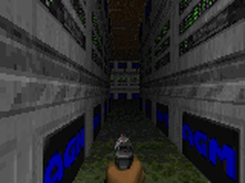
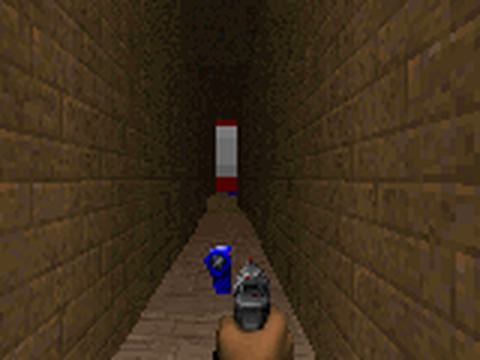
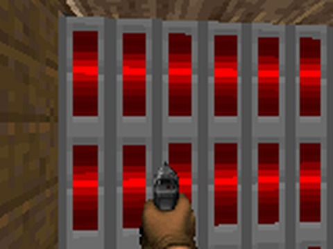
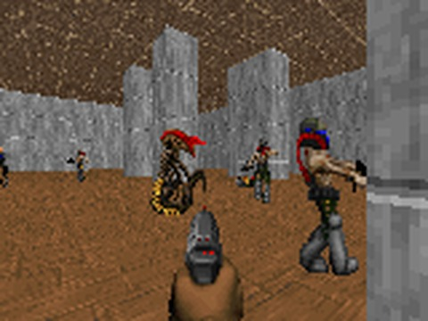
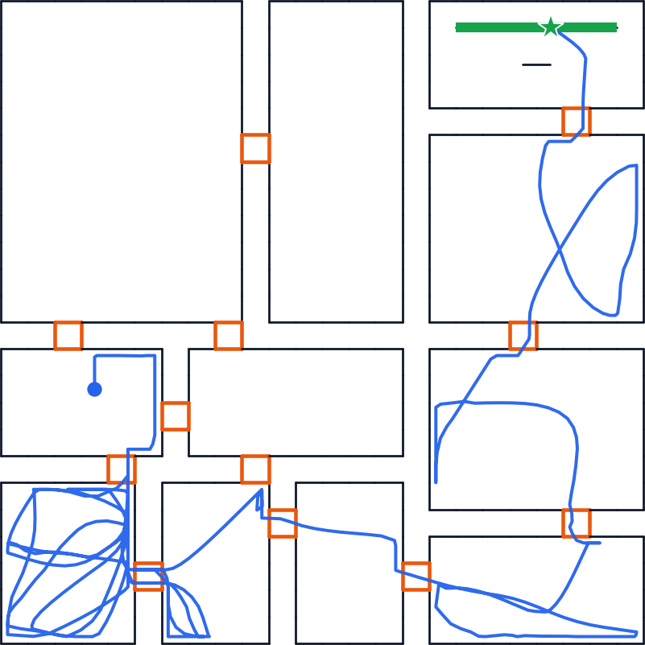
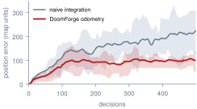
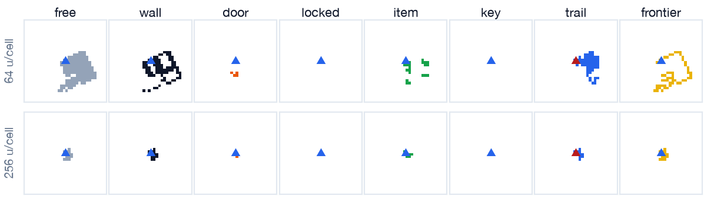

Yugaantar DevForge 2026 · Track 1 · Can it play DOOM?
DoomForge
One 2-million-parameter recurrent network that explores DOOM levels it has never seen, builds its own map as it moves, fetches keys, opens locks and fights to the exit, deciding in 1.6 ms on one CPU thread. Behaviour cloning from a privileged teacher, then parallel PPO with an asymmetric critic.
+8.48+39%
held-out test score vs +6.11 for our reference design (paired 95% CI +1.47 … +3.24)
5 skills
at 100% on unseen test maps: sanity, corridor door, room door, two-key chain, backtrack
4.2×
more of the map explored on ambush levels than our reference; 2.8–3.2× on the other hard tiers
1.6 ms
per decision on one CPU thread, 25× under the 40 ms budget; 8.4 MB checkpoint
Inside the agent's headWhat it sees, and what the network concludes

exit visible 1.00bearing 0–30° R
Recognises the exit from pixels; exits are in neither rays nor entities.

key colour: blue 0.94
Reads key colour, which the observation hides (every key is just "key").

red key heldforward 1.00
Returns to the red lock with its key and drives straight in.

enemy 1.00 · 5 in viewfire 0.66
Fights: five monsters tracked by attention over the entity list.
Frames from the shipped agent on unseen validation maps; tags are the network's own auxiliary- and action-head outputs at that decision.
It plays

Unseen 11-room level, solved: real path (blue) from spawn (●) through six doors (orange) to the exit (★), 915 decisions.
It remembers

The map it built in that episode from its own observations and movement only.
EgoMap: pose from its own actions
Δθ = T[warm-up][run]·(turnL − turnR)
m₀, m₄ = R(θ)·vego momentum at tic 0 / 4
a = (m₄ − f⁴m₀)/(f+f²+f³+f⁴), f = 0.90625
Δp = Σk=1..4 f·(mk−1 + a), |Δp| ≤ ray − 17
m₀, m₄ = R(θ)·vego momentum at tic 0 / 4
a = (m₄ − f⁴m₀)/(f+f²+f³+f⁴), f = 0.90625
Δp = Σk=1..4 f·(mk−1 + a), |Δp| ≤ ray − 17

2.3× less drift than naive integration on the agent's own episodes (99 vs 225 units after 500 decisions).
Memory inputRays and entities projected into a 160×160 grid, read as 16 heading-up channels

The real network input at decision 450 of that episode: 8 channels at 64 units/cell (2,048-unit window)
and the same 8 max-pooled to 256 units/cell (8,192 units). Heading-up (agent ▲ at centre), so "frontier ahead-left" is
the same pattern at any heading. Doors clear when rays pass through. Deterministic perception; no search or planning.
Atlas-E network · 2.00 M acting parametersSeven encoders, a learned goal, recurrent memory, factorised actions
64 rays · dist, one-hot hit ×6, sin, cos
≤ 32 entities · 5 features + type embedding
17 vitals · prev action · pose
RGB 120×160 → 3×30×40
EgoMap 16×32×32
›
circular Conv1d 9→32→64→64, mean⊕max128
MLP → 4-head self-attention, mean⊕max128
MLPs64 · 32 · 32
colour CNN 32/64/64, stride 2128
map CNN stride 1 → 3× stride 2 → 4×4×64192
Goal head 704 → goal vector (dx, dy, dist, bearing) + type (exit / key / frontier), re-encoded and fused
›
Fuse 736 → 384
GRU 384 + trunk · memory
6 heads move 3 · strafe 3 · turn 3 · attack · use · weapon = 216 legal actions → seeded sample → 9 buttons
Training only: value, 35 aux outputs (exit, key colour, enemy, door, damage), privileged critic